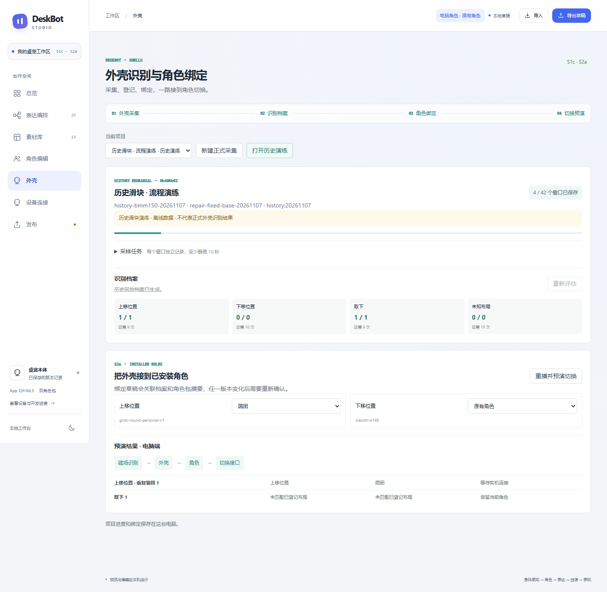

<!doctype html>
<html lang="zh-CN">
<meta charset="utf-8">
<meta name="viewport" content="width=device-width, initial-scale=1">
<title>DeskBot 外壳工作台 S1c / S2a</title>
<style>
body{font:16px system-ui,sans-serif;max-width:960px;margin:40px auto;padding:0 20px;color:#24324a;background:#f5f7fb}
main{background:white;border:1px solid #dde4f0;border-radius:18px;padding:28px}
a{color:#315bdc}img{max-width:100%;border:1px solid #e1e7f0;border-radius:12px}li{margin:.5em 0}
</style>
<main>
<h1>外壳识别与角色绑定</h1>
<p>S1c 采集项目与 S2a 角色绑定预演，电脑端完成。正式外壳采样与实机自动切换待接续。</p>
<ul>
<li><a href="http://127.0.0.1:8780/#shells">打开工作台（8780）</a></li>
<li><a href="validation.json">验证记录</a> · <a href="peer-review.json">独立复核</a></li>
<li><a href="python-results.json">Python 测试</a> · <a href="browser-results.json">浏览器测试</a></li>
</ul>
<h2>桌面预览</h2>

</main>
</html>
